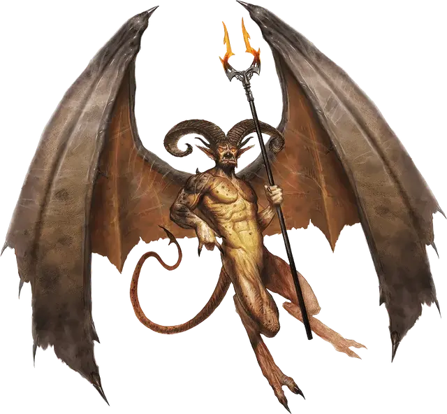

Рогатый дьявол (Мальбранш)
Horned Devil
Большое Исчадие (Дьявол), законно-злое

Класс Доспеха 18 (природный доспех)
Хиты 178 (17к10 + 85)
Скорость 20 футов, летая 60 футов
| мод | спас | ||
|---|---|---|---|
| СИЛ | 22 | +6 | +10 |
| ЛОВ | 17 | +3 | +7 |
| ТЕЛ | 21 | +5 | +5 |
| мод | спас | ||
|---|---|---|---|
| ИНТ | 12 | +1 | +1 |
| МДР | 16 | +3 | +7 |
| ХАР | 17 | +3 | +7 |
Сопротивление урону холод; дробящий, колющий, рубящий от немагических атак, кроме нанесённых посеребрённым оружием
Иммунитет к урону огонь, яд
Иммунитет к состояниям отравление
Чувства тёмное зрение 120 футов, пассивное Восприятие 13
Языки Инфернальный, Телепатия 120 фт.
Опасность 11 (7200 опыта)
Бонус мастерства +4
Особенности
Дьявольское зрение. Магическая тьма не мешает тёмному зрению дьявола.
Сопротивление магии. Дьявол совершает с преимуществом спасброски от заклинаний и прочих магических эффектов.
Вариант: Призыв дьявола. У некоторых дьяволов может быть действие, позволяющее им призывать других дьяволов.
Призыв дьявола (1/день). Дьявол выбирает, кого призвать, и пытается это сделать. Рогатый дьявол получает 30% шанс призыва одного рогатого дьявола (Мальбранш) [horned devil].
Призванный дьявол появляется в свободном пространстве в пределах 60 футов от призывателя, и действует как его союзник, не имеющий способности призывать дьяволов. Он призывается на 1 минуту или пока призыватель не умрёт или действием его не отпустит.
Действия
Мультиатака. Дьявол совершает три рукопашные атаки: две вилами, и одну хвостом. Он может использовать Метание пламени вместо любой рукопашной атаки.
Вилы. Рукопашная атака оружием: +10 к попаданию, досягаемость 10 футов, одна цель. Попадание: Колющий урон 15 (2к8 + 6).
Хвост. Рукопашная атака оружием: +10 к попаданию, досягаемость 10 футов, одна цель. Попадание: Колющий урон 10 (1к8 + 6). Если цель — существо, не являющееся ни нежитью, ни конструктом, она должна преуспеть в спасброске Телосложения Сл 17, иначе будет терять 10 (3к6) хитов в начале каждого своего хода из-за инфернальной раны. Каждый раз, когда дьявол попадает этой атакой по цели, уже имеющей эту рану, урон от раны увеличивается на 10 (3к6). Любое существо может залечить рану, если действием совершит успешную проверку Мудрости (Медицина) Сл 12. Эта рана также закрывается, если цель получит магическое лечение.
Метание пламени. Дальнобойная атака заклинанием: +7 к попаданию, дистанция 150 футов, одна цель. Попадание: Урон огнём 14 (4к6). Если цель — горючий предмет, который никто не несёт и не носит, она также загорается.
Описание
Рогатые дьяволы безумно ленивы, и стараются не подвергать себя опасности. Более того, они ненавидят и боятся существ сильнее их самих. Однако если их достаточно спровоцировать или разозлить, ярость этих исчадий бывает ужасающей.
Мальбранш ростом примерно с огра и покрыт твёрдыми как железо чешуйками. Рогатые дьяволы, летающая пехота адских легионов, следуют приказам дословно. Их огромные крылья и гигантские рога являют собой устрашающую картину, когда они пикируют с неба, атакуя смертоносными трезубцами и хлеща хвостами.
См. дополнительно статью: "Бестиарий: Дьяволы"